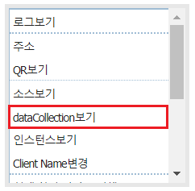
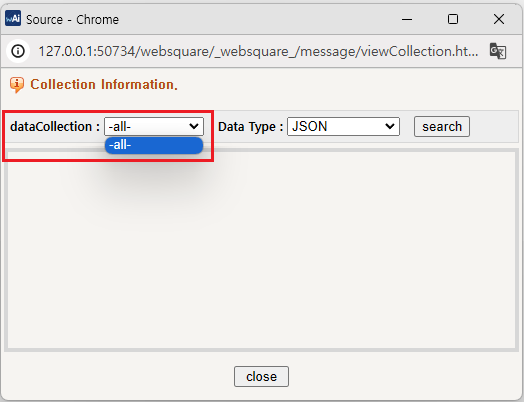
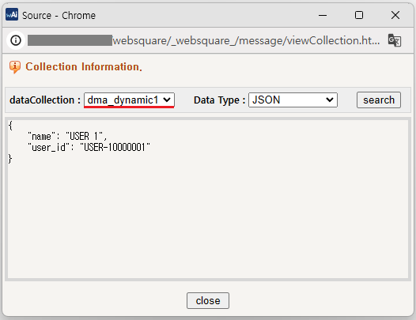
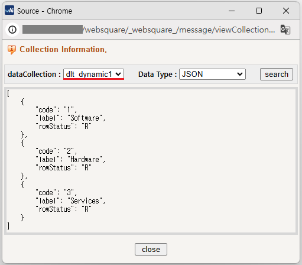

'$p.data.create' 메소드를 사용하여 DataMap과 DataList를 생성하는 예제입니다.
DataMap 생성하기
DataList 생성하기
예제 영역 '로그 확인'의 textarea에 실행 결과 값이 출력됩니다.
Example 1.Log
[09:20:37] ** [실행1] - DataMap 생성하기 scwin.btn_ex1_onclick 실행 시작 **
[09:20:37] > 1단계 DataMap 생성 완료
[09:20:37] > 2단계 DataMap setJSON 호출 완료
[09:20:37] {"name":"Inswave Systems","address":"서울시 강서구 공항대로 247, 퀸즈파크나인 C동 12층"}
[09:20:37] > 3단계 DataMap getJSON 호출 완료
[09:20:37] ** [실행1] - DataMap 생성하기 scwin.btn_ex1_onclick 실행 종료 **1
STEP 1: 웹스퀘어의 컨텍스트 메뉴 중 'dataCollection보기'를 실행합니다.
'DataMap 생성하기'의 아래 영역에서 [Ctrl] 키를 누른 채 마우스의 오른쪽 버튼을 클릭합니다.
브라우저에 웹스퀘어 컨텍스트 메뉴가 표시됩니다. 'dataCollection보기' 메뉴를 클릭합니다.
Image 1.브라우저(Chrome) 실행 예시

2
STEP 2: 화면에 표시된 팝업을 통해 생성된 DataCollection을 확인합니다.
팝업에 구성된 'dataCollection'의 목록에 항목이 없습니다.
Image 2.브라우저(Chrome) 실행 예시

1
STEP 1: 현재 화면의 DataCollection을 확인합니다.
두 개의 데이터 객체(dlt_book, dma_userInfo)가 생성되어있습니다. 데이터 객체를 확인하는 방법은 DataCollection 확인 하기에 설명되어있습니다.
2
STEP 2: 'DataMap 생성하기' 버튼을 클릭합니다.
DataMap이 생성되고 실행 단계 로그가 출력됩니다.
Example 2.Log
[18:13:09] ** [실행1] - DataMap 생성하기 scwin.btn_ex1_onclick 실행 시작 **
[18:13:09] > 1단계 DataMap 생성 완료
[18:13:09] > 2단계 DataMap setJSON 호출 완료
[18:13:09] {"name":"USER 1","user_id":"USER-10000001"}
[18:13:09] > 3단계 DataMap getJSON 호출 완료
[18:13:09] ** [실행1] - DataMap 생성하기 scwin.btn_ex1_onclick 실행 종료 **3
STEP 3: 현재 화면의 DataCollection을 확인합니다.
데이터 객체를 확인하는 방법은 DataCollection 확인 하기에 설명되어있습니다.
dataCollection 목록에 'dma_dynamic1'이 추가되었음을 확인합니다. 목록에서 'dma_dynamic1'을 선택하고 '조회' 버튼을 클릭하여 할당된 데이터를 확인합니다.
Image 3.브라우저(Chrome) 실행 예시

1
STEP 1: 현재 화면의 DataCollection을 확인합니다.
두 개의 데이터 객체(dlt_book, dma_userInfo)가 생성되어있습니다. 데이터 객체를 확인하는 방법은 DataCollection 확인 하기에 설명되어있습니다.
2
STEP 2: 'DataList 생성하기' 버튼을 클릭합니다.
DataList가 생성되고 실행 단계 로그가 출력됩니다.
Example 3.Log
[18:22:45] ** [실행2] - DataList 생성하기 scwin.btn_ex2_onclick 실행 시작 **
[18:22:45] > 1단계 DataList 생성 완료
[18:22:45] > 2단계 DataList setJSON 호출 완료
[18:22:45] [{"code":"1","label":"Software","rowStatus":"R"},{"code":"2","label":"Hardware","rowStatus":"R"},{"code":"3","label":"Services","rowStatus":"R"}]
[18:22:45] > 3단계 DataList getAllJSON 호출 완료
[18:22:45] ** [실행2] - DataList 생성하기 scwin.btn_ex2_onclick 실행 종료 **3
STEP 3: 현재 화면의 DataCollection을 확인합니다.
데이터 객체를 확인하는 방법은 DataCollection 확인 하기에 설명되어있습니다.
dataCollection 목록에 'dlt_dynamic1'이 추가되었음을 확인합니다. 목록에서 'dlt_dynamic1'을 선택하고 '조회' 버튼을 클릭하여 할당된 데이터를 확인합니다.
Image 4.브라우저(Chrome) 실행 예시

'$p.data.create' 메소드를 사용하여 스크립트를 작성합니다. 아래의 스크립트는 생성할 데이터 객체의 옵션을 JSON으로 할당한 예시입니다.
Example 4.Script
//DataMap 속성 정의 let jsnOption = { "id": "dma_dynamic1", //생성할 DatMap의 ID입니다. "type": "dataMap", //생성할 데이터객체의 타입입니다. dataMap 고정. "option": { "baseNode": "map" }, "keyInfo": [ { "id": "name", "name": "NAME", "dataType": "text" }, { "id": "user_id", "name": "USER ID", "dataType": "text" } ] }; //1. DataCollection 생성하기 $p.data.create(jsnOption); //2. 생성된 객체에 Data 할당하기 //옵션에 적용한 id로 직접 접근이 가능합니다. dma_dynamic1.setJSON({ "name": "USER 1", "user_id": "USER-10000001" }); //또는 아래와 같이 $p.getComponentById API로 객체를 반환 받아 제어할 수 있습니다. let cmpDataMap = $p.getComponentById("dma_dynamic1"); cmpDataMap.setJSON({ "name" : "USER 1", "user_id" : "USER-10000001" });
'$p.data.create' 메소드를 사용하여 스크립트를 작성합니다. 아래의 스크립트는 생성할 데이터 객체의 옵션을 JSON으로 할당한 예시입니다.
Example 5.Script
//DataList 속성 정의 let jsnOption = { "id" : "dlt_dynamic1", //생성할 DatList의 ID입니다. "type" : "dataList", //생성할 데이터객체의 타입입니다. dataList 고정. "option" : { "baseNode": "list", "repeatNode": "map" }, "columnInfo" : [ { "id" : "code", "name": "CODE", "dataType" :"text" }, { "id" :"label", "name" : "CODE NAME", "dataType" :"text" } ] }; //1. DataCollection 생성하기 $p.data.create(jsnOption); //2. 생성된 객체에 Data 할당하기 //옵션에 적용한 id로 직접 접근이 가능합니다. dlt_dynamic1.setJSON([ {"label" : "Software", "code" : "1"}, {"label" : "Hardware", "code" : "2"}, {"label" : "Services", "code" : "3"} ]); //또는 아래와 같이 $p.getComponentById API로 객체를 반환 받아 제어할 수 있습니다. let cmpDataList = $p.getComponentById("dlt_dynamic1"); cmpDataList.setJSON([ {"label" : "Software", "code" : "1"}, {"label" : "Hardware", "code" : "2"}, {"label" : "Services", "code" : "3"} ]);